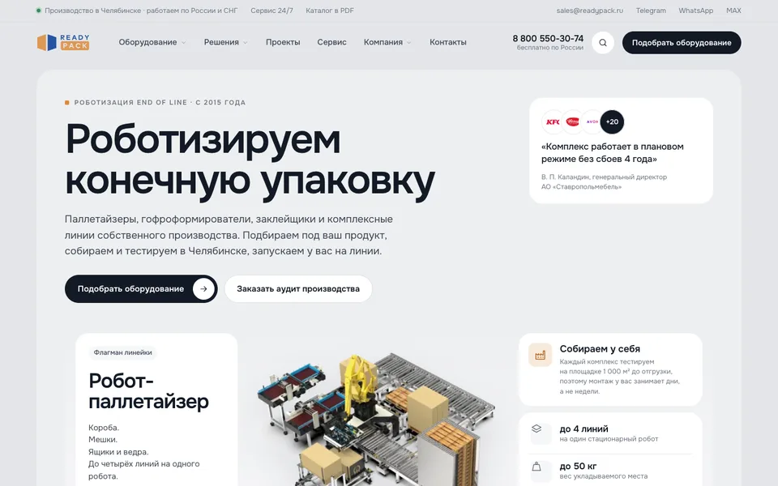
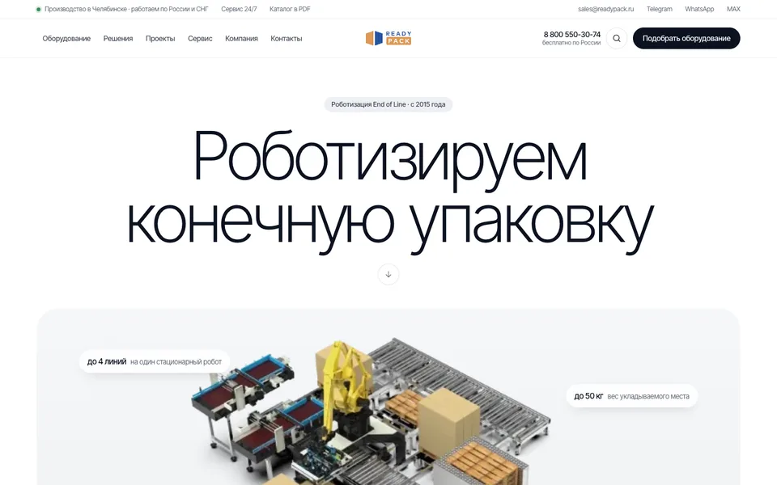
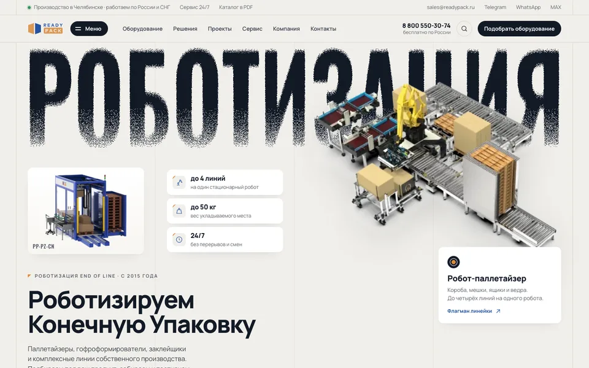
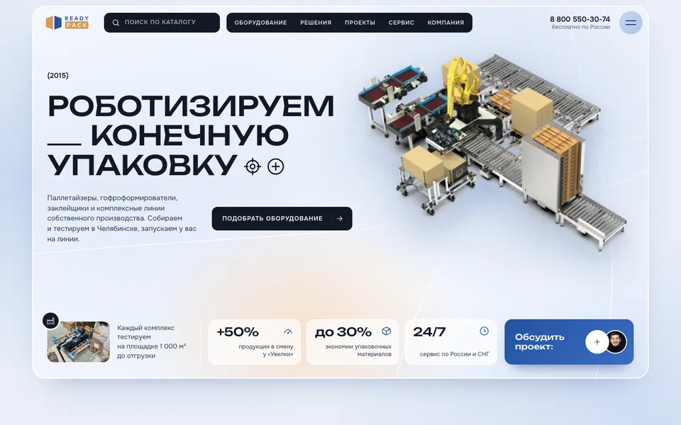
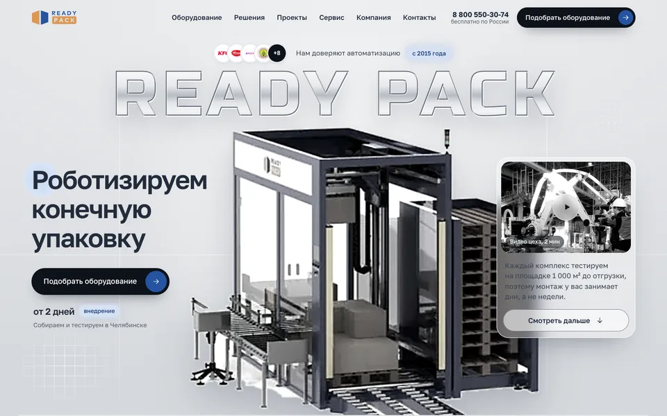

Варианты дизайна нового сайта
Вариантов: 5, в каждом 5 страниц: главная, каталог, карточка серии, кейс, подбор. Внизу каждой страницы есть переключатель: вариант меняется, а страница остаётся та же.

V1 · BentoСветлые bento-плитки, крупный продукт в центре
V2 · CleanБелый фон, тонкая крупная типографика, тёмные блоки с синим свечением
V3 · GridТёплый светлый фон с инженерной сеткой, огромный жирный заголовок
V4 · GradientПастельный градиент в фирменных цветах, стеклянная рамка, широкий капс
V5 · MonoМонохромный серый, гигантский контурный логотип, стеклянные карточки